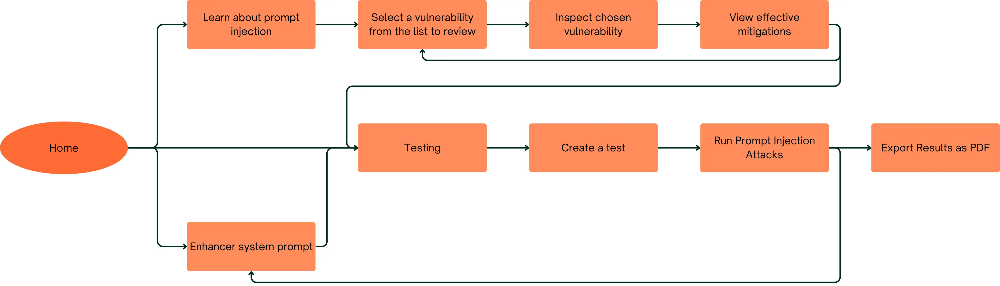

Project Background
The modern rise in AI adoption has led to increased concerns about the security and robustness of AI systems, particularly in the context of prompt injection attacks. AI has become increasingly prevalent in various applications, but with this speed many organisations have not fully considered the challenges it presents, making it a critical area for security research. Our project partner from Avanade, Josh McDonald[1], an AI Security Lead, has worked with us to explore this issue and develop a solution that informs Avanade's clients about the risks and mitigation strategies for prompt injection attacks. Avanade is a company formed by Accenture and Microsoft, they work with organisations to provide IT consulting and services focused on utilising Microsoft technology in a number of different domains including artificial intelligence, business analytics, digital transformation and cloud computing [2].
Project Goals
With this project we aim to support Avanade's clients in both a technical and non-technical capacity, providing those without extensive AI security knowledge with the core information about the risks and mitigations as well as tools that both support less technical users and present more advanced features for users with experience in AI security.
Requirements Gathering
Initially, our project partners from Avanade presented us the problem without a clear solution in mind, this allow us to explore existing information about prompt injection attacks and identify key areas for development. We started by conducting research into the vulnerabilities, mitigations, impacts and existing solutions, we used this information to form a report on the current state of prompt injection security. Our research informed the development of our platform and its features by discovering the current gaps in AI security. We decided that the area of our focus should be giving our users space to test their AI models with various mitigations and attacks to understand the potential risks and effectiveness of different mitigation strategies.
We wanted our platform to be accessible to users with varying levels of AI security knowledge, ensuring that both technical and non-technical users could effectively utilize the tools and information provided. Therefore we believed the platform should contain information about the vulnerabilities and mitigations, as well as testing environments where users can construct tests on popular AI models or supply their own. While testing frameworks already exist like Microsoft's PyRIT and NVIDIA's Garak these are primarily aimed at technical users and may not be accessible to those without extensive AI security knowledge. The solution we've decided upon is easily customisable and far more accessible, which we believe is incredibly important in a world where AI is becoming increasingly prevalent.
Client Requirements
After creating the initial report, we had various meetings with our client to discuss and refine the requirements for the platform. This included focusing on the needs of the company and the typical requirements of Avanade's clients. We developed and refined these requirements throughout the early development process with feedback from our client on our first prototypes. The majority of our final requirements were derived from these discussions.
Survey
Our team decided that a survey would not be particularly useful for gathering the specific requirements we needed, as it would be difficult to design questions that capture the nuanced needs of our target users. Since we believe that the quality of requirements gained by specific interviews with industry experts would be more helpful compared to a survey.
Interview
We conducted a semi-structured interview with a Senior Research Scientist in Agentic AI working for Holistic AI, Zekun Wu[3]. Holistic AI is an organisation that works in AI security and compliance so we consulted Zekun Wu to ask where he felt AI security was most lacking and where he experienced difficulties in his research. Below is also listed the responses of our industry partner to our interview questions.
Stakeholder · industry security lead Industry AI Security Lead Expand transcript
Q: What do you think is the current biggest issue with prompt injection?
A: Well, the field is still quite new and there's a lack of standardized approaches to addressing these vulnerabilities, especially since attacks are evolving so rapidly. But if we're talking about the most concerning issue I would say indirect prompt injection since it introduces so many new attack vectors to models and agents, and there aren't many tools available to address it effectively.
Q: Where do you feel current mitigations, frameworks, or tools are lacking?
A: I think the current frameworks are very technical and not easily connected, so while testing one framework, it's difficult to integrate and compare insights from another. I personally use Microsoft Foundry [4] a lot in my work, I think it's a great tool for deploying AI models and setting up endpoints, but it lacks seamless integration with other security tools.
Q: What frameworks have you used, or are there any tools we should research?
A: I have used Microsoft Foundry and PyRIT, I think both are great tools for testing prompt injection vulnerabilities. PyRIT is more of a set of comprehensive tests that try to break the model with different vulnerabilities like red-teaming attacks.
Q: Do you think a tool for creating custom test scenarios for prompt injection could be useful for your work?
A: I think it's a great idea and could be really useful for our clients. The customizability sounds interesting, while most of our clients use the GPT or Anthropic models it would be nice to be able to test any model easily too.
Q: How accessible should this tool be?
A: I think with the knowledge you have in the report you could make the tool quite accessible to users with varying levels of AI security knowledge. I can see it being useful for newer members of my team who might not have as much experience with AI security for learning about the vulnerabilities involved. And the testing could be great for all users, technical and non-technical.
Q: What would make you trust a prompt injection protection tool?
A: I would want a tool with lots of transparency and clear control over the testing process.
Stakeholder · research scientist AI Security Researcher Expand transcript
Q: What do you think is the current biggest issue with prompt injection?
A: Prompt injection isn't like traditional software vulnerabilities. Working with non-deterministic behavior makes it challenging to predict and mitigate these threats effectively, especially since these models are fundamentally made to follow instructions so trying to define acceptable behavior is already hard, and detecting and blocking inappropriate behavior is an ongoing challenge.
Q: Where do you feel current mitigations, frameworks, or tools are lacking?
A: There are so many ways prompt injection can occur, and current tools often focus on specific attack vectors rather than providing a comprehensive solution. Indirect prompt injection is particularly lacking in terms of detection and prevention.
Q: What frameworks have you used, or are there any tools we should research?
A: Well, for publically available frameworks, there are some testing frameworks available like NVIDIA's Garak for example. But I'm not too familiar with them, I mostly work with proprietary solutions.
Q: Do you think a tool for creating custom test scenarios for prompt injection could be useful for your work?
A: It depends on how much control we have over the testing process and the ability to customize the scenarios for different use cases. I think it could definitely be useful if it provides a good balance between automation and flexibility.
Q: How accessible should this tool be?
A: I think supporting technical users in testing should be a priority, but making it as accessible as possible would be ideal. I wouldn't want functionality or depth to be sacrificed for accessibility.
Q: What would make you trust a prompt injection protection tool?
A: Reproducible results and transparent reporting of the tool's performance in detecting and preventing prompt injection attacks, with observable changes in behaviour with various defenses.
Personas
We constructed personas to represent the different types of users who would interact with our platform, considering both the non-technical and technical user groups. This helped us to better understand the different requirements and features that would be necessary to meet the needs of all of our users.
Use Cases

Example use case scenarios
Six representative personas (Who / When / Why / How). All scenarios are shown below; you can collapse a row if you want a shorter view.
AI Security Tester Ama Adeyemi
- Who
- Internal AI security researcher validating model safety before release.
- When
- During pre-deployment security reviews and incident follow-up analysis.
- Why
- To identify prompt injection weaknesses and verify whether mitigations are effective.
- How
- Uses the vulnerability pages to understand attack patterns, then runs targeted tests in the testing view and compares pass/fail outcomes.
Worried Client Emma Schutte
- Who
- Non-technical operations stakeholder evaluating whether AI adoption is safe.
- When
- Before approving AI-enabled workflow changes within business operations.
- Why
- To understand risks, gain confidence, and see practical safeguards in plain language.
- How
- Starts on the home page for high-level context, reviews selected vulnerabilities, and uses chatbot guidance to interpret mitigations and outcomes.
Technology Sales Representative Alex Mulwayne
- Who
- Client-facing sales consultant explaining AI assurance capabilities.
- When
- During client demos, workshops, and proposal discussions.
- Why
- To clearly communicate how security controls reduce business risk and support trust.
- How
- Navigates from vulnerability summaries to in-depth mitigation examples and exports PDF reports as supporting material for stakeholders.
AI Systems Developer Jordan Reyes
- Who
- Technical stakeholder implementing or refining mitigation logic in production systems.
- When
- During design iterations, validation cycles, and hardening phases.
- Why
- To translate security findings into deployable engineering decisions.
- How
- Uses technical explanations, pseudocode, and testing outputs to compare mitigation combinations and prioritise implementation steps.
Compliance & Risk Officer Priya Nair
- Who
- Governance stakeholder responsible for AI assurance evidence.
- When
- During audit preparation, policy reviews, and risk committee reporting cycles.
- Why
- To verify that key prompt injection controls are tested and traceable.
- How
- Reviews vulnerability coverage, checks test pass/fail history, and exports PDF evidence for governance documentation.
Product Manager Daniel Foster
- Who
- Product decision-maker balancing usability, risk, and delivery timelines.
- When
- During sprint planning and release readiness reviews for AI-enabled features.
- Why
- To prioritise mitigation work based on practical impact and residual risk.
- How
- Uses summaries from the home and vulnerability views, then consults testing outcomes to decide which mitigation improvements enter the next release.
Functional Requirements
Implementation snapshot
The “not completed” row is the Should Have sandbox requirement, delivered instead via live demo and static before/after mitigation content (see *).
Must Have
Home Page
| Status | Requirement |
|---|---|
| The system provides a home page introducing prompt injection, associated risks, and a high-level explanation of how prompt injection works. | |
| The home page displays a clickable list of known prompt injection vulnerabilities. | |
| The home page includes a short summary for each vulnerability. |
In-Depth Vulnerability View
| Status | Requirement |
|---|---|
| Selecting a vulnerability from the home page navigates to an in-depth vulnerability view. | |
| Each in-depth vulnerability view includes a technical vulnerability information panel containing a technical explanation. | |
| The in-depth vulnerability view includes an example panel showing model behaviour when faced with that vulnerability. | |
| The in-depth vulnerability view includes a clear explanation of at least one mitigation strategy. | |
| Each vulnerability includes a technical explanation and a working example demonstrating the vulnerability. | |
| A comparison panel shows model behaviour without mitigation and with mitigation applied. |
Knowledge Base
| Status | Requirement |
|---|---|
| The system provides a knowledge base containing clear examples of prompt injection vulnerabilities. | |
| The knowledge base includes technical explanations for each vulnerability. | |
| The knowledge base includes working attack examples. | |
| The knowledge base includes clear explanations of prompt injection mitigations. | |
| The knowledge base includes technical explanations for each mitigation. |
Testing View
| Status | Requirement |
|---|---|
| A testing view is accessible from the main navigation bar. | |
| Users can create custom tests for individual mitigations. | |
| Users interact with the system via a chat-style interface that processes a single prompt. | |
| Users can enable or disable mitigations identified during research (one per test). | |
| Custom tests are named by the user. | |
| Custom tests are stored in memory during the session. | |
| Custom tests clearly indicate a pass/fail result based on predefined security expectations. | |
| Test data is preserved locally in an SQL database. | |
| All tests run on a fixed model (GPT 5.0). |
Should Have
| Status | Requirement |
|---|---|
| The in-depth vulnerability view includes a sandbox input field for testing prompts with and without mitigation enabled.* | |
| The in-depth vulnerability view includes mitigation implementation templates presented in pseudocode. | |
| The in-depth vulnerability view includes references or external sources for further reading. | |
| The in-depth vulnerability view supports exporting as a PDF. | |
| The testing view supports multi-prompt tests with conversation history. | |
| The testing view supports multiple agents. | |
| The testing view supports exporting of tests as PDFs. | |
| Multiple mitigations can be applied simultaneously in a custom test. | |
| The knowledge-base chatbot can answer theoretical prompt injection questions. | |
| The knowledge-base chatbot can answer practical prompt injection scenario questions and provide guidance. |
Could Have
| Status | Requirement |
|---|---|
| The in-depth vulnerability view presents mitigations in multiple programming languages with a tabbed interface. | |
| The chatbot can provide links that redirect users to relevant pages within the system. | |
| The AI prompt enhancer view includes a fine-tuned model to refine prompts based on selected vulnerabilities and mitigations. | |
| The testing view can run interactive tests on custom models connected via API. | |
| The testing view can run interactive tests on models with custom system prompts. | |
| The testing view can run automated testing pipelines based on NVIDIA Garak and Microsoft PyRIT frameworks. |
Won't Have
| Status | Requirement |
|---|---|
| The system does not include authentication. | |
| The system does not automatically fix detected prompt injection vulnerabilities or attacks. | |
| The system does not modify custom or non-standard models. |
Non-Functional Requirements
Implementation snapshot
Every non-functional checklist item is satisfied.
Must Have
| Status | Requirement |
|---|---|
| The system is delivered as a web application. | |
| The system presents vulnerabilities, mitigations, and test results in a clear and understandable manner for technical and semi-technical users. | |
| The chatbot and testing interfaces provide acceptable interactive response times. | |
| The interface is intuitive, clear, and logically structured to conform to standards. | |
| The system supports a dark mode interface. |
Should Have
| Status | Requirement |
|---|---|
| The system uses consistent colour schemes with Avanade style. | |
| The system uses standardised icons. | |
| The system uses uniform layout conventions across all views. | |
| Red is used to represent vulnerabilities and failing tests. | |
| Green is used to represent mitigations and passing tests. |
Could Have
| Status | Requirement |
|---|---|
| Vulnerabilities and mitigations are mapped to established standards such as OWASP Top 10 for LLMs and MITRE ATLAS. |
Won't Have
| Status | Requirement |
|---|---|
| The system is not run on a persistent backend server. | |
| The system does not ensure compatibility with all LLM providers. | |
| The system does not support fully custom automated testing pipelines. |
*This requirement was found to not align with the page as it functions as a testing feature which is more aligned with the testing page. To replace the interactive test we featured a live demo and a static section displaying the difference with and without mitigations, meeting the core idea behind the requirement without conflicting with the page's purpose.
References
Sources cited on this page, numbered in IEEE style.
- J. McDonald, professional profile, LinkedIn. Accessed: Mar. 26, 2026. [Online]. Available: https://www.linkedin.com/in/joshmcdonaldmvp/
- Avanade, “About Avanade.” Avanade. Accessed: Mar. 20, 2026. [Online]. Available: https://www.avanade.com/en-gb/about
- Z. Wu, professional profile, LinkedIn. Accessed: Mar. 26, 2026. [Online]. Available: https://www.linkedin.com/in/zekun-wu-1190091a3/
- Microsoft, “Azure AI Foundry documentation,” Microsoft Learn. Accessed: Mar. 26, 2026. [Online]. Available: https://learn.microsoft.com/azure/ai-foundry/